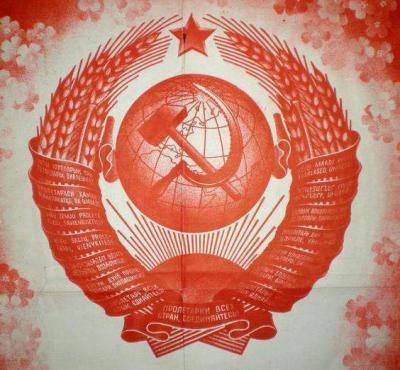

Партия
Коммунистическая Партия Гигахруща или КПГХ
Партия — полумифическая структура, якобы руководящая всеми аспектами жизни в Гигастроении вплоть до мельчайших из них. По слухам, во главе Партии стоит некий Центральный Комитет(ЦК), принимающий решения о судьбах бесконечного множества людей, однако достоверной информации, позволяющей подтвердить или опровергнуть существование ЦК, не существует. Гораздо чаще о Партии напоминают куда более приземлённые вещи: обшарпанные агит-плакаты в коридорах, выцветшие красные знамёна, и конечно же – приказы, исходящие откуда-то «сверху». Обычно наиболее высокопоставленными представителями КПГХ, с которыми приходится иметь дело простым жителям являются главблоки, но даже они не знают источника этих загадочных указаний.
Общие сведения
Никто не знает, как и откуда появилась КПГХ, кто был её основателем. Предполагается, что Партия существовала ещё в дохрущёвские времена, или же с первых смен существования Гигахрущёвки. Партия является ровесницей Гигастроения, и даже если предположить, что оно существовало всегда, то Партия — тоже. Иногда в речи старожилов проскакивают непонятные, незнакомые слова, которые, возможно, могли бы пролить свет на происхождение Партии, но, увы, значения этих слов не помнят даже те, кто их произносит.
Силой, обеспечивающей безраздельное господство Партии в холодных бетонных коридорах Гигахруща, являются многочисленные отряды ликвидаторов, использующих самое разнообразное снаряжение — от граблей и до гравижёрновов, превращающих даже самые опасные порождения самосбора в пыль. Ликвидаторы также подавляют любое инакомыслие жесточайшим образом, расстреливая, сжигая, утилизируя и распыляя всех, кто кажется подозрительным. В случае восстаний и бунтов, вне зависимости от их причины, ликвидаторы немедленно открывают огонь по недовольным. Отдельным подразделением является Отдел Государственной безопасности(ОГБ), чьих полномочий хватает для того, чтобы арестовать любого гражданина или даже ликвидатора без объяснения причины, а затем увести в неизвестном направлении. В подавляющем большинстве случаев арестованные исчезают навсегда.
Но как бы жестока ни была политика Партии, насколько абсурдными ни были бы исходящие «сверху» приказы, именно Партия является тем барьером, что отделяет обитателей Гигахрущёвки от падения в пучину ужаса и хаоса. Обеспечивается работа огромных заводов по производству пищевых концентратов, не дающих жителям умереть с голода, организуются в единый механизм отрядов ликвидаторов, зачищающих блоки от опаснейших последствий самосбора и не позволяющих им поглотить простых граждан. Силами многочисленных агентов ОГБ ведется постоянное противостояние страшным, кровожадным культам, несущих отчаяние и безумие. Даже если Партия является лишь легендой, придуманной главблоками для упрочнения собственной власти – без неё любой организованной жизни в Гигахруще всё равно пришёл бы конец, ведь подавляющее большинство жителей верит, что где-то там, «наверху» есть кто-то, некие незримые наблюдатели, что помогают, защищают и руководят жизнью маленького человека. И нередко лишь эта вера спасает разумы граждан от поглощения чёрной бездной, имя которой — безысходность.